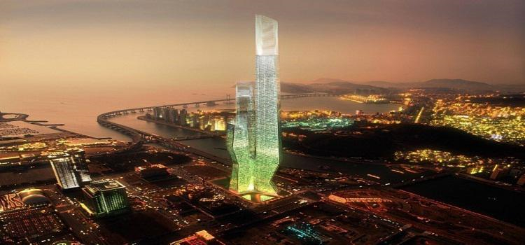

著名景点
#N首尔塔 N Seoul Tower#

图：N首尔塔
N首尔塔是首尔人引以为傲的地标建筑。N是南山Namsan和New的第一个字母。N首尔塔大厅内设有播放电影预告片和音乐录像带的多媒体区、儿童体验学习馆及举办展览和演出的空间。
5层的n.GRIL西餐厅每48分钟转动360度，为顾客提供嘴里是美食、眼里是美景的愉悦体验空间。而设在2层的卫生间被称为天空卫生间，因为隔窗一望便能将首尔的景色尽收眼底。从八角楼往首尔塔拍摄照片，无论白日黑夜都十分美丽。
若您的时间允许，建议依据您前往的月份先行了解日落时间范围。若在日落前半个钟头左右搭乘登塔电梯进入，则您能够在塔顶迎接日落的美景变化。 T5楼或T4楼都能够自由活动，离开时要至T4楼搭乘电梯。
不想在人潮拥挤的T5楼，建议您可以至T4楼，同样能够拍摄美丽的景致。 地下一楼搭乘登塔电梯处，有纪念店。登塔之后，T5楼也有纪念品店，于T5楼买到的明信片是已经含有韩国国内邮资票的，但若要寄往国际（非韩国境内），结帐处有补足邮资的邮资票可以加购（一张明信片仅限加购一张邮资票）。T5楼还有糖果店、T4楼则有咖啡与小餐点。
网站：http://www.nseoultower.co.kr/eng/
地址：首尔龙山区龙山洞2街山1-3
前往方式：走路+乘缆车 （4号地铁线明洞站3号出口附近，711后面的路口进；看到太平洋饭店，走右边；一直朝着首尔塔走，直到看到正官庄的专卖店；缆车站就在右手停车场后面的小灰楼里。上楼购买缆车票后，搭乘缆车到首尔塔脚下。）
#北汉山国家公园 Bukhansan National Park#

图：北汉山国家公园
北汉山国立公园高耸的岩峰和岩峰间流淌着的清澈溪谷断然可见。山峰千姿百态，其中有836.5m的白云峰，岩峰和树木之间生存有1，300余种动植物。岩峰中的第一高峰是仁寿峰的奇岩，世界闻名的悬崖仁寿峰达200m以上，光是路线就有100多个。站在白云台顶上，透过云层，汉城和汉江一收眼底。
北汉山的寺庙也是著名的文化遗迹，其中有著名的释迦如来磨岩佛，是在碑峰东面的僧伽寺高5m的绝壁上雕刻的，位于文殊峰半山腰的文殊寺以文殊窟顶滴下来的药水而闻名。
如果你喜欢徒步旅行或登山，北汉山国家公园是很棒的选择。建议早点去，7点左右，会非常享受。建议徒步旅行需要准备好一双合适的鞋子。
春天所有的花竞相开放；夏天绿葱葱的森林和溪谷相呼应，特别是沿着溪谷向上走，更是夏天登山的最佳之处；秋天参观北汉山城的古迹也是不错的，在沿着北汉山峰线建的北汉山城上眺望山势和汉城的景色更是美妙；冬天可以欣赏白雪皑皑的景色。
网站 ：http://bukhan.knps.or.kr/
地址：首尔北面
前往方式：公交+步行
首尔站 –搭乘150路（干线公交） – 道峰山站下车 – 步行10分钟左右
龙山站 – 道峰山站下车 – 步行10分钟左右
#景福宫#
图：景福宫
景福宫是韩国政府大力推动的景点之一，朝鲜半岛历史上最后一个统一王朝——朝鲜王朝（李氏朝鲜）的正宫（法宫）。位于朝鲜王朝国都汉城（今韩国首尔），又因位于城北部，故又称“北阙”，是首尔五大宫之首，朝鲜王朝前期的政治中心。
地址：首尔钟路区世宗路1-1号
#德寿宫 Deoksugung#
图：德寿宫
德寿宫位于首尔最繁华的街道上，其以富有韵味的石墙路而闻名。在首尔的宫殿中唯有德寿宫与西式建筑并肩而立，构成别样的景致。德寿宫原来是朝鲜成宗（1469－1494）的哥哥月山大君（1454－1488）的住宅。光海君（1575－1641）即位后将其改称为景云宫，从而使之具有了王宫的面貌。后来又改称为德寿宫。
经过德寿宫入口处的大汉门就是禁川，河上有禁川桥，桥宽可容王驾通过。中和殿是法殿，古色古香，充分展现了其古老的历史。殿内的屋顶上画着两条龙。一般而言龙趾数表明着龙的级别。
中国和韩国大部分都是以五爪龙象征王，以七爪龙象征皇帝。即祚堂是光海君和仁祖（1595－1649）曾举行过即位仪式的地方，故得名为即祚堂。堂前的匾额是高宗1905年登上皇位后亲笔手书。
咸宁殿是高宗的寝殿，其名之意是祈愿高宗永远平安。现在改装为东面是皇帝的房间，西面是皇后的房间。静观轩是1900年建的最早的西式建筑。高宗曾在此喝咖啡、休闲，后面有一条又窄又长的秘密地下通道，通向俄罗斯公馆，现在依然存在。
石造殿与静观轩都是庆云宫内现存的西式建筑，最初由英国人建造，属于英国公司，1905年日本掌握韩国后，于1910年才竣工。高宗死后，石造殿成为日本美术作品展览馆，向公众开放。解放后1946年5月美、苏联合委员会曾在此开会。现在石造馆的东馆是宫中文物展览馆，西馆是国立现代美术馆分馆。
地址：首尔中世宗大路99
前往方式：地铁+步行（搭乘地铁1号、3号、5号线至钟路3街站（종로3가）下车，经由6号出口出站后步行约10分钟；或3号线的安国站（안국역）下车，经由3号出口出站后步行5分钟即可到达。）
#昌德宫 Changdeokgung Palace#
图：昌德宫
昌德宫（창덕궁）曾是朝鲜王朝的离宫，后经倭乱被毁，又重建于1609年。在而后的300年里一直是朝鲜王朝的正宫，是首尔众多王宫中维护最好的一座建筑群。正门“敦化门”是未被烧毁的木质建筑，很具特色。昌德宫建筑群的特点是自然与人工相协调，吸引了众多游客前来参观，如果有喜爱古典美的游客，一定不能错过这里。
地址：首尔钟路区栗谷路99号
前往方式：搭乘地铁1号、3号、5号线至钟路3街站（종로3가）下车，经由6号出口出站后步行约10分钟；或3号线的安国站（안국역）下车，经由3号出口出站后步行5分钟即可到达。
#明洞购物街 Myeongdong Shopping Street#
图：明洞购物街
明洞就像是围棋盘一样，从明洞地铁站下车后，就会看到明洞大街，两旁有胡同。因为明洞云集了非常多的品牌店和饮食店，最好脑子里有个大概地图，分地区逛比较好。
在明洞，除了购物，还有许多好吃的和好玩的。在吃的方面，有西餐厅、快餐店以及韩式、西式、日式等各种各样的餐厅，其中明洞炸猪排和刀切面最为有名，您不妨品尝一下。
此外，明洞还有美容店、银行、剧场等设施为游人提供方便。特别值得一提的是到明洞一定要去的地方——明洞圣堂。这里是韩国最早的天主教堂，纯粹的哥特式建筑古香古色。教堂的后面有让人们在烦乱的都市中休息的地方，游客可以在这里减轻旅途的疲劳。
这里有繁华的时装商店和历史悠久的咖啡屋，吉他演奏台，以及满足人们多种口味的各式餐厅.每年春，秋两季各举行一次明洞节，以华丽的开幕式为始，举行明洞小姐选拔赛，民俗游戏，传统婚礼仪式，时装模特，化装表演等各种节目。
明洞作为代表首尔的时装街，云集了大型购物中心和百货商场。这里不仅有深受时尚人士喜爱的知名品牌店、世界级品牌店、大型街头店、中低档服装店及日用百货店，还有知名品牌化妆品店，时尚饰品店等应有尽有，可谓是购物者的天堂。近来这里还时常举行街头时装秀、化妆秀。
不仅如此，每条胡同里都有各类餐厅，小到风味小吃，大到高级餐馆，游客可以根据自己的口味，随时随地品尝美味佳肴。在大使馆街上有华侨经营的中国餐馆，您也可在此饱餐一顿。逛逛古董店、看看小饰品， 明洞让游客大饱眼福。
明洞的周边还有中国大使馆、明洞天主教堂、南山韩屋村、光化门、首尔市政府和清溪川等各种景点。明洞有可满足追求美丽的女士们热切愿望的一切。配备齐全，灯火辉煌的 高档化妆品店 比比皆是。这里也是具备世界最高水平 整容技术 的综合美容护理产业之中心。
地址：首尔中区
前往方式：搭乘地铁4号线至明洞站下车，经由6号出口出站
#北村韩屋村 Bukchon Hanok Village #
北村韩屋村是韩国一处保存非常完善的韩国古代村落，村子很大，有成片成片的古代传统屋子，屋子是木制的，非常的古色古香。
北村韩屋是目前首尔体验韩屋文化最赞的地方，而且这里有很真实的感觉，因为至今为止还生活着居民。所以来这里旅行，千万不要太吵，会吵到里面生活的居民。在这里照相留念是再好不过的选择了。来北村韩屋逛，一定要带好相机，去找找北村八景吧！
网站：http://hanok.seoul.go.kr/front/index.do
地址：首尔钟路区桂洞街37
前往方式：地铁3号线从安国站3号出口，在现代建设公司大楼右侧往左拐，向中央高中方向走，就会看见桂洞和嘉会洞一带成片的韩屋。另外，乘支线公交车7025路、干线公交车109路， 151路， 162路， 171路， 172路， 272路和601路，机场大巴602-1路也能到达。
#乐天世界 Lotte World #
图：乐天世界
乐天集团为了迎合1988年汉城奥运会，在奥运主体育场“蚕室体育场”旁边建立了一座集合主题公园“乐天世界（롯데월드）”、文化空间“乐天世界民俗博物馆（민속박물관）”、百货店“乐天百货公司世界店（롯데백화점）”、免税店“乐天免税店世界店（롯데 면세점 롯데월드점）”、五星级酒店“乐天世界酒店（롯데호텔）”、大型生活超市“乐天玛特（롯데마트）”和韩流圣地“乐天世界星光大道（롯데월드 스타에비뉴）”的综合体，习惯上称之为“乐天世界”。其他乐天百货公司和乐天免税店所有的东西，在乐天世界均可以找到。
乐天世界是一个带有神秘主题色彩的室内＋室外主题公园，园区很大看起来很像迪士尼乐园，每天在园区里都会有花车表演，深受外国游客喜爱。
这里的乐天玛特（Lotte Mart）也许算得上首尔最值得一逛的超市，不但规模庞大、商品种类全，而且价格便宜。一些韩国特色的零食是回国馈赠亲友的理想礼物。喜欢烹饪韩国料理的购物爱好者更不能错过这里，这里的韩国产酱类和其他食材比市场还要便宜。
地址：首尔松坡区蚕室洞40-1
前往方式
搭乘地铁在首尔站下车时 ：首尔站（4号线堂岭站方向） → 在东大门运动场下车，换乘蚕室方向的2号线 → 在蚕室站下车（4号出口）；
永登浦站下车时 ： 永登浦站 → 新道林方向 → 新道林站下车，换乘蚕室方向的 2号线 → 在蚕室站下车（4号出口）；
龙山站下车时 ： 中央线德沼方向 → 往十里站下车，换乘蚕室方向的2号线 → 在蚕室站下车。
#梨花洞壁画村 Ihwa Mural Village #
图：梨花洞壁画村
梨花洞壁画村（이화마을）位于骆山公园东侧依山而建的小村落，上上下下的台阶上、旁边的墙壁上，被艺术家们画上了各种图案，可以看到入口处的Q版复仇者联盟、洒满花朵的阶梯、屋舍墙壁上向外张望的”小狗”。
主要的房屋都被人美化了，外墙上画了很多漂亮的壁画，每一副的作品看上去都很有特色。最为经典的它的楼底被添加了几条大大的金鱼，非常漂亮。梨花村了还有居民居住，有些人把家里改装成咖啡店。
地址：首尔钟路区梨花洞一带
前往方式：可选择搭乘地铁4号线至惠化站（혜화）下车，经由2号出口出站后直行，在第一个路口有指示牌，沿着骆山公园方向走，到公园正门左转，沿路走大概15分钟就能看到了。
私房景点
#盘浦大桥月光彩虹喷泉 #
图：盘浦大桥月光彩虹喷泉
盘浦大桥月光彩虹喷泉（반포대교달빛무지개분수）每年的4月至10月平日及周末会进行20分钟的喷水表演。盘浦大桥全线设置380个喷口，启动时会有水柱喷出，非常壮观，吉尼斯世界记录大全将之列为全世界最长的桥梁喷泉表演
地址：首尔瑞草区盘浦洞
前往方式：地铁3， 7， 9号线高速客运站 8-2号出口出来，从高速客运站十字路口右拐，沿着盘浦路往盘浦大桥方向前行，通过地下通道到月光彩虹广场。
#Tteok Museum 年糕博物馆#
图：年糕博物馆
年糕这种食物在韩国已有500年的历史，在年糕博物馆（떡박물관）的两个展厅里，你可以看到近2千多件日常韩国人厨房及制作传统打糕相关联的器具。周一至周六的10：00-15：00，在年糕博物馆内还设有年糕制作、泡菜制作、韩餐制作培训班。学习一种年糕或泡菜的制作方法大约需要50，000韩元，两道韩餐菜肴的制作大概需要70，000韩元。
网站：http://www.kfr.or.kr/
地址：首尔钟路区
前往方式：可选择搭乘地铁1、3、5号线至钟路3街站下车，经由6号出口出站后步行3分钟即可到达
#MBC World#
图：MBC World
MBC世界，英文名为MBC WORLD，位于首尔市上岩洞MBC（韩国文化广播公司）本部大楼内，是韩国电视台首个电视节目主题公园。以MBC的人气电视剧和综艺节目为主，给游客提供了丰富且特别的体验。
体验活动/设施包括：
M 区（全息剧场、VR体验、新闻体验、舞蹈体验、名誉殿堂、电子留言簿、户外演播室，金嘴厅）；
B区（MBC品牌纪念品店，MBC经典韩流节目馆）；
C区（MBC超人气电视节目体验区）；
室外（明星公园，明星街道）。
网站：http://mbcworld.imbc.com/chn/index.html
地址：首尔麻浦区城岩路267
前往方式：京义中央线数码媒体城（Digital Media City）站9号出口，步行12分钟
地铁6号线数码媒体城（Digital Media City）站9号出口，步行12分钟